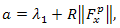

A gradient method for minimazing general function -H(x), where variable x denotes the column vector of variables (x1,...,xn). This method rests on maximizing a quadratic approximation to the function H(x) on a suitably chosen spherical region. Computational technique for maximization take the form of an iterative procedure. The method is specifically designed to work for functions which are not concave and for starting points which are not necessarily near a maximum.
Let us denote by Fx the vector of first partial derivatives evaluated at x and by Sx the symmetric (n x n) matrix of second partial derivatives evaluated at x.
Assume that H(x) admits of a second-order Taylor series expansion around a point a = (a1,...,an):
| (1) |
The iterative procedure for finding the maximum of the function is, given point x p at which Sxp and Fxp are evaluated, to define the next point, x p+1, as the maximum of the quadratic approximation (1) on a spherical region centered at x p. Ideally, the region should be taken as large as possible provided that it is small enough that in the region the quadratic approximation is a satisfactory guide to the actual behavior of the function. The following procedure attempts to approximate this ideal.
Two distinct cases arise:
(a) Fxp significantly different from 0. In this event we choose a number
 |
(2) |
Let ΔH be the actual change in the function due to the proposed Δx and let ΔQ be the corresponding change in the quadratic approximation. Let z = ΔH/ΔQ. If z ≤ 0, the proposed Δx implies overshooting; it is therefore not accepted, R is increased by a factor of 4 and a new (S - αI)-1 is calculated. If z > 0 and close to unity (in practice, if z is between 0.7 and 1.3) R is decreased by multiplying R by a factor of 0.4. If z > 2, R is again increased by a factor of 4. For other values of z (0 ≤ z ≤ 0.7 and 1.3 ≤ z ≤ 2) the magnitude of the factor multiplying R is determined by linear interpolation between 0.4 and 4. We now take
or according to whether α is positive or not. If α = 0 at this point, we generally directly computed the step size necessary to produce a positive α. This typically saved a number of iterations.Now x p+1 is the maximum of the quadratic approximation to the function on a region Bα of radius
with the center at x p.(b) Fxpis so near 0 that the length of the step taken is within a preset tolerance of 0. Then, if Sxp is negative definite, the process is terminated and x p is accepted as the location of the maximum. If Sxp is not negative definite, we are at a saddle point or at the bottom of a cylindrical valley. A step is taken along the eigenvector corresponding λ1 and the algorithm recycles in the usual manner.
One final feature, incorporated for reason of computational efficiency rather than theoretical elegance, was the introduction of a scalar hp into (2), writing it as
At each step the computation is first performed with h p = 1. If this gives an improvement in H(x), h p is multiplied by a constant, which magnitude is a decreasing function of the absolute value of the angle between the current step and the immediately preceding step. Then the function is examined at the new point so obtained. This process is repeated until the function declines in which event the last step is accepted. It should be noted that these attempts at stretching the step are relatively cheap since they require only an evaluation of the function. This is in contrast to changes in α within each iteration which require reinversion of (Sxp − α I).